Summary
Speech analysis and synthesis with Linear Predictive Coding (LPC) exploit the predictable nature of speech signals. Cross-correlation, autocorrelation, and autocovariance provide the mathematical tools to determine this predictability. If we know the autocorrelation of the speech sequence, we can use the Levinson-Durbin algorithm to find an efficient solution to the least mean-square modeling problem and use the solution to compress or resynthesize the speech.
1. Introduction
Linear predictive coding (LPC) is a popular technique for speech compression and speech synthesis. The theoretical foundations of both are described below.
Correlation coefficients
Correlation, a measure of similarity between two signals, is frequently used in the analysis of speech and other signals. The cross-correlation between two discrete-time signals x[n] and y[n] is defined as 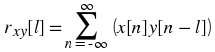 where n is the sample index, and l is the lag or time shift between the two signals Proakis and Manolakis [link] (pg. 120). Since speech signals are not stationary, we are typically interested in the similarities between signals only over a short time duration ( < 30 ms). In this case, the cross-correlation is computed only over a window of time samples and for only a few time delays l = {0, 1, …, P} .
Now consider the autocorrelation sequence
r
ss
[l]
, which describes the redundancy in the signal
s[n]
.
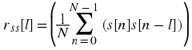 where
s[n]
,
n = {-P, (-P) + 1, …, N − 1}
are the known samples (see Figure 1) and the
 is a normalizing factor.
is a normalizing factor.
Figure 1.
Another related method of measuring the redundancy in a signal is to compute its autocovariance 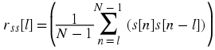 where the summation is over N − l products (the samples {s[-P], …, s[-1]} are ignored).
Linear prediction model
Linear prediction is a good tool for analysis of speech signals. Linear prediction models the human vocal tract as an infinite impulse response (IIR) system that produces the speech signal. For vowel sounds and other voiced regions of speech, which have a resonant structure and high degree of similarity over time shifts that are multiples of their pitch period, this modeling produces an efficient representation of the sound. Figure 2 shows how the resonant structure of a vowel could be captured by an IIR system.
Figure 2.
The linear prediction problem can be stated as finding the
coefficients
a
k
which result in the best prediction (which minimizes
mean-squared prediction error) of the speech sample
s[n]
in terms of the past samples
s[n − k]
,
k = {1, …, P}
. The predicted sample
 is then given by Rabiner
and Juang [link]
is then given by Rabiner
and Juang [link]
 where
P
is the number of past samples of
s[n]
which we wish to examine.
where
P
is the number of past samples of
s[n]
which we wish to examine.
Next we derive the frequency response of the system
in terms of the prediction coefficients
a
k
. In Equation, when the predicted
sample equals the actual signal (i.e.,
 ), we have
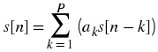
), we have
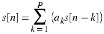

 The optimal solution to this problem is Rabiner and Juang [link]
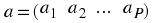
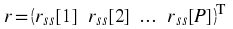
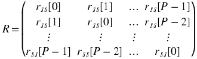
a = R
-1
r
Due to the Toeplitz property of the
R
matrix (it is symmetric with equal diagonal
elements), an efficient algorithm is available for computing
a
without the computational expense of finding
R
-1
. The Levinson-Durbin algorithm is an
iterative method of computing the predictor coefficients
a
Rabiner and Juang [link]
(p.115).
The optimal solution to this problem is Rabiner and Juang [link]
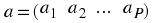
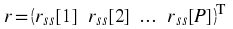
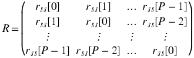
a = R
-1
r
Due to the Toeplitz property of the
R
matrix (it is symmetric with equal diagonal
elements), an efficient algorithm is available for computing
a
without the computational expense of finding
R
-1
. The Levinson-Durbin algorithm is an
iterative method of computing the predictor coefficients
a
Rabiner and Juang [link]
(p.115).
Initial Step: E 0 = r ss [0] , i = 1
for i = 1 to P .
Steps

α j , i = α j , i – 1 − k i α i – j , i – 1 j = {1, …, i − 1}
α i , i = k i
E i = (1 − k i 2)E i – 1
LPC-based synthesis
It is possible to use the prediction coefficients to synthesize the original sound by applying δ[n] , the unit impulse, to the IIR system with lattice coefficients k i , i = {1, …, P} as shown in Figure 3. Applying δ[n] to consecutive IIR systems (which represent consecutive speech segments) yields a longer segment of synthesized speech.
In this application, lattice filters are used rather than direct-form filters since the lattice filter coefficients have magnitude less than one and, conveniently, are available directly as a result of the Levinson-Durbin algorithm. If a direct-form implementation is desired instead, the α coefficients must be factored into second-order stages with very small gains to yield a more stable implementation.
Figure 3.
When each segment of speech is synthesized in this manner, two problems occur. First, the synthesized speech is monotonous, containing no changes in pitch, because the δ[n] 's, which represent pulses of air from the vocal chords, occur with fixed periodicity equal to the analysis segment length; in normal speech, we vary the frequency of air pulses from our vocal chords to change pitch. Second, the states of the lattice filter (i.e., past samples stored in the delay boxes) are cleared at the beginning of each segment, causing discontinuity in the output.
To estimate the pitch, we look at the autocorrelation coefficients of each segment. A large peak in the autocorrelation coefficient at lag l ≠ 0 implies the speech segment is periodic (or, more often, approximately periodic) with period l . In synthesizing these segments, we recreate the periodicity by using an impulse train as input and varying the delay between impulses according to the pitch period. If the speech segment does not have a large peak in the autocorrelation coefficients, then the segment is an unvoiced signal which has no periodicity. Unvoiced segments such as consonants are best reconstructed by using noise instead of an impulse train as input.
To reduce the discontinuity between segments, do not clear the states of the IIR model from one segment to the next. Instead, load the new set of reflection coefficients, k i , and continue with the lattice filter computation.
2. Additional Issues
Spanish vowels (mop, ace, easy, go, but) are easier to recognize using LPC.
Error can be computed as a T R a , where R is the autocovariance or autocorrelation matrix of a test segment and a is the vector of prediction coefficients of a template segment.
A pre-emphasis filter before LPC, emphasizing frequencies of interest in the recognition or synthesis, can improve performance.
The pitch period for males ( 80 - 150 kHz) is different from the pitch period for females.
For voiced segments,
 , where
T
is the pitch period.
, where
T
is the pitch period.
3. References
J. G. Proakis and D. G. Manolakis. (1996). Digital Signal Processing: Principles, Algorithms, and Applications. Upper Saddle River, NJ: Prentice-Hall.
L. Rabiner and B. H. Juang. (1993). Fundamentals of Speech Recognition. Englewood Cliffs, NJ: Prentice-Hall.